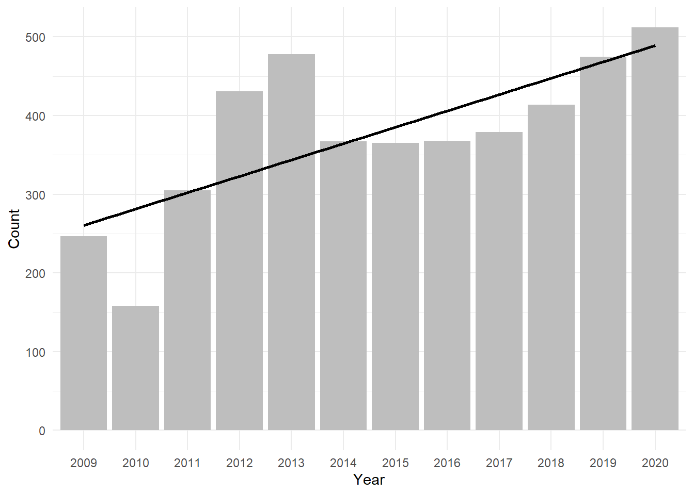
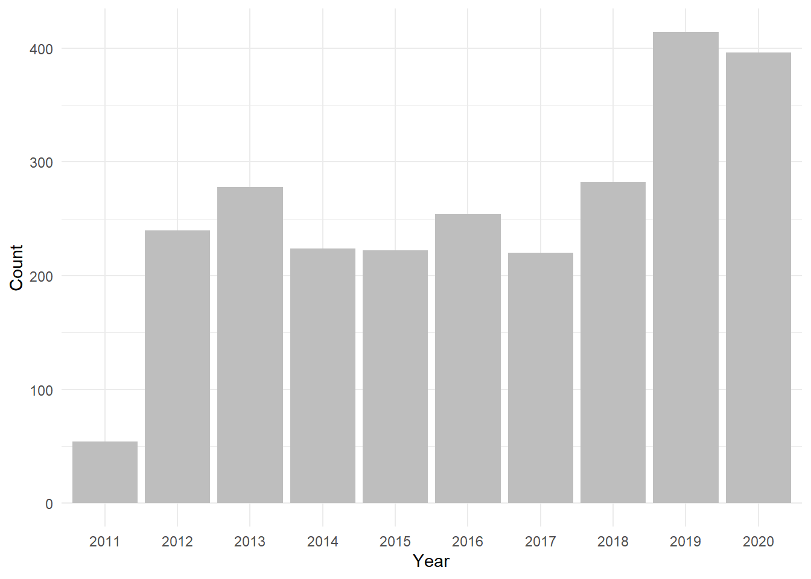
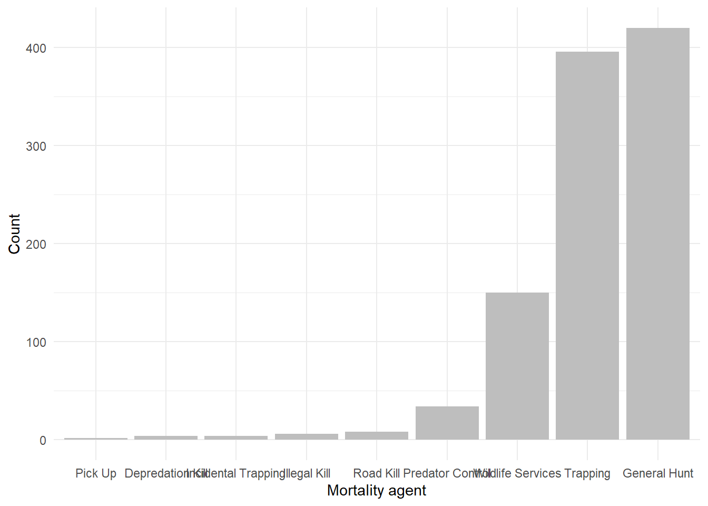

Chapter 3 Data exploration
3.1 Summary statistics
How many wolves in the data set were harvested?
wolf_id %>%
summarise(total_wolves = n_distinct(UI_ID),
total_wolves_harvested = sum(mort_tag != "" & !is.na(mort_tag))) %>%
tidyr::pivot_longer(cols = everything(),
names_to = "category",
values_to = "count")## # A tibble: 2 × 2
## category count
## <chr> <int>
## 1 total_wolves 2586
## 2 total_wolves_harvested 15851585 wolves were harvested, according to this database.
3.2 Data visualization
Here I use ggplot to create reproducible graphs using different elements of the wolf harvest data.
3.2.1 How many wolves were harvested each year?
harvest %>%
group_by(harvest_year) %>%
summarise(animals_harvested = n()) %>%
filter(harvest_year !=2021) %>%
ggplot(aes(x = factor(harvest_year),
y = animals_harvested)) +
geom_bar(stat = "identity",
fill = "gray") +
geom_smooth(method = "lm", aes(group = 1), color = "black", se = FALSE) +
labs(x = "Year",
y = "Count") +
theme_minimal()## `geom_smooth()` using formula = 'y ~ x'
3.2.2 How many wolves were harvested by trapping each year?
harvest %>%
filter(mortality_agent == "Trapping", harvest_year != 2021) %>%
count(harvest_year, mortality_agent) %>%
ggplot(aes(x = factor(harvest_year),
y = n,
fill = factor(harvest_year))) +
geom_bar(stat = "identity",
show.legend = F,
fill = "gray") +
labs(x = "Year",
y = "Count") +
theme_minimal() 
3.2.3 What were the mortality agents in 2020?
harvest %>%
filter(harvest_year == 2020) %>%
count(mortality_agent) %>%
ggplot(aes(x = reorder(mortality_agent, n),
y = n,
fill = mortality_agent)) +
geom_bar(stat = "identity",
show.legend = FALSE,
fill = "gray") +
labs(x = "Mortality agent",
y = "Count") +
theme_minimal() 